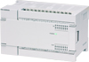
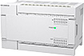
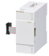
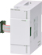
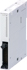
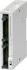
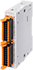
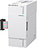

MELSEC iQ-F series I/O module

- Powered I/O module
- Input module
- Output module
- Input/output module
- High-speed pulse input/output module
Powered I/O module
| Model | Total No. of points |
No. of input/output points & Input/output type |
Connection type | Compatible CPU module | |||||||
|---|---|---|---|---|---|---|---|---|---|---|---|
| Input | Output | FX5U | FX5UC | FX5UJ | FX5S | ||||||
| AC power supply type | |||||||||||
|  | FX5-32ER/ES | 32 points | 16 points | 24 V DC (sink/ source) |
16 points | Relay | Screw terminal block | ○ | × | ○ | × |
| FX5-32ET/ES | Transistor (sink) | ||||||||||
| FX5-32ET/ESS | Transistor (source) | ||||||||||
| DC power supply type | |||||||||||
|  | FX5-32ER/DS | 32 points | 16 points | 24 V DC (sink/ source) |
16 points | Relay | Screw terminal block | ○ | * ○ |
○ | × |
| FX5-32ET/DS | Transistor (sink) | ||||||||||
| FX5-32ET/DSS | Transistor (source) | ||||||||||
- *When connecting to FX5UC, FX5-CNV-IFC or FX5-C1PS-5V is required.
Input module
| Model | Total No. of points |
No. of input/output points & Input/output type |
Connection type | Compatible CPU module | |||||||
|---|---|---|---|---|---|---|---|---|---|---|---|
| Input | Output | FX5U | FX5UC | FX5UJ | FX5S | ||||||
|  | FX5-8EX/ES | 8 points | 8 points | 24 V DC (sink/source) |
- | - | Screw terminal block | ○ | *1 ○ |
○ | × |
|  | FX5-16EX/ES | 16 points | 16 points | ||||||||
|  | FX5-C16EX/D | 16 points | 16 points | 24 V DC (sink) |
- | - | Connector | *2 ○ |
○ | *2 ○ |
× |
| FX5-C16EX/DS | 24 V DC (sink/source) |
||||||||||
|  | FX5-C32EX/D | 32 points | 32 points | 24 V DC (sink) |
|||||||
| FX5-C32EX/DS | 24 V DC (sink/source) |
||||||||||
|  | FX5-C32EX/DS-TS | 32 points | 32 points | 24 V DC (sink/source) |
- | - | Spring clamp terminal block | *2 ○ |
○ | *2 ○ |
× |
- *1When connecting to FX5UC, FX5-CNV-IFC or FX5-C1PS-5V is required.
- *2When connecting to FX5U or FX5UJ, FX5-CNV-IF is required.
Output module
| Model | Total No. of points |
No. of input/output points & Input/output type |
Connection type | Compatible CPU module | |||||||
|---|---|---|---|---|---|---|---|---|---|---|---|
| Input | Output | FX5U | FX5UC | FX5UJ | FX5S | ||||||
| FX5-8EYR/ES | 8 points | - | - | 8 points | Relay | Screw terminal block | ○ | *1 ○ |
○ | × | |
| FX5-8EYT/ES | Transistor (sink) | ||||||||||
| FX5-8EYT/ESS | Transistor (source) | ||||||||||
| FX5-16EYR/ES | 16 points | 16 points | Relay | ||||||||
| FX5-16EYT/ES | Transistor (sink) | ||||||||||
| FX5-16EYT/ESS | Transistor (source) | ||||||||||
| FX5-C16EYR/D-TS | 16 points | - | - | 16 points | Relay | Spring clamp terminal block | *2 ○ |
○ | *2 ○ |
× | |
| FX5-C16EYT/D | 16 points | - | - | 16 points | Transistor (sink) | Connector | *2 ○ |
○ | *2 ○ |
× | |
| FX5-C16EYT/DSS | Transistor (source) | ||||||||||
| FX5-C32EYT/D | 32 points | 32 points | Transistor (sink) | ||||||||
| FX5-C32EYT/DSS | Transistor (source) | ||||||||||
| FX5-C32EYT/D-TS | 32 points | - | - | 32 points | Transistor (sink) | Spring clamp terminal block | *2 ○ |
○ | *2 ○ |
× | |
| FX5-C32EYT/DSS-TS | Transistor (source) | ||||||||||
- *1When connecting to FX5UC, FX5-CNV-IFC or FX5-C1PS-5V is required.
- *2When connecting to FX5U or FX5UJ, FX5-CNV-IF is required.
Input/output module
| Model | Total No. of points |
No. of input/output points & Input/output type |
Connection type | Compatible CPU module | |||||||
|---|---|---|---|---|---|---|---|---|---|---|---|
| Input | Output | FX5U | FX5UC | FX5UJ | FX5S | ||||||
| FX5-16ER/ES | 16 points | 8 points | 24 V DC (sink/source) | 8 points | Relay | Screw terminal block | ○ | *1 ○ |
○ | × | |
| FX5-16ET/ES | Transistor (sink) | ||||||||||
| FX5-16ET/ESS | Transistor (source) | ||||||||||
| FX5-C32ET/D | 32 points | 16 points | 24 V DC (sink) | 16 points | Transistor (sink) | Connector | *2 ○ |
○ | *2 ○ |
× | |
| FX5-C32ET/DSS | 24 V DC (sink/source) | Transistor (source) | |||||||||
| FX5-C32ET/DS-TS | 32 points | 16 points | 24 V DC (sink/source) | 16 points | Transistor (sink) | Spring clamp terminal block | *2 ○ |
○ | *2 ○ |
× | |
| FX5-C32ET/DSS-TS | Transistor (source) | ||||||||||
- *1When connecting to FX5UC, FX5-CNV-IFC or FX5-C1PS-5V is required.
- *2When connecting to FX5U or FX5UJ, FX5-CNV-IF is required.
High-speed pulse input/output module
| Model | Total No. of points |
No. of input/output points & Input/output type |
Connection type | Compatible CPU module | |||||||
|---|---|---|---|---|---|---|---|---|---|---|---|
| Input | Output | FX5U | FX5UC | FX5UJ | FX5S | ||||||
|  | FX5-16ET/ES-H | 16 points | 8 points | 24 V DC (sink/source) | 8 points | Transistor (sink) | Screw terminal block | *1 ○ |
*1 *2 ○ |
*1 ○ |
× |
| FX5-16ET/ESS-H | Transistor (source) | ||||||||||
- *1Supported in version 1.030 or later.
- *2When connecting to FX5UC, FX5-CNV-IFC or FX5-C1PS-5V is required.